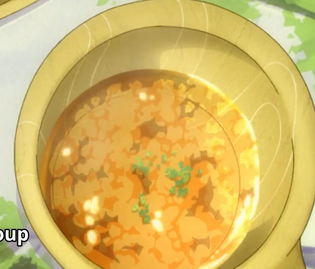

back to home
Rockbird Teriyaki with Onion Soup

In the anime, Fel hunts and mukouda cooks a "Rockbird". Since Rock Bird is fictional, this recipe uses chicken thigh as a substitute and
mukouda prepares a simple, rustic onion soup to accompany the meal, emphasizing deep caramalized onion flavor.
Ingredients & preps:
Rockbird Teriyaki
- 2 chicken thigh (bone-in, skin-on preferred)
- 3 tbsp soy sauce
- 2 tbsp mirin (sweet rice wine)
- 1 tbsp sake (Japanese rice wine)
- 1 tbsp sugar
- 1 tbsp vegetable oil
- Freshly ground black pepper
- Optional: chopped green onions for garnish
Onion Soup
- 3 large onions, thinly sliced
- 2 tbsp butter
- 4 cups beef or vegetable broth
- Salt and pepper to taste
- Optional: crusty bread or toasted baguette slices
Instructions:
Rockbird Teriyaki
- Prepare the Teriyaki Sauce: In a small bowl, mix soy sauce, mirin, sake, and sugar until sugar dissolves.
- Season the Chicken: Lightly pepper the chicken thighs.
- Cook Chicken: Heat oil in a pan over medium heat. Place chicken skin side down and cook until the skin is crisp and browned (about 7 minutes).
- Flip the chicken and cook the other side for about 5 minutes.
- Add Sauce: Pour the teriyaki sauce mixture into the pan. Reduce heat to low and simmer, spooning the sauce over the chicken until it thickens and the chicken is cooked through (about 5–7 minutes).
- Serve: Slice and garnish with green onions. Serve hot with steamed rice.
Onion Soup
- Caramelize Onions: Melt butter in a pot over medium-low heat. Add sliced onions and cook slowly, stirring frequently, until golden brown and deeply caramelized (about 30 minutes).
- Add Broth: Pour in the broth, stir well, and bring to a gentle simmer.
- Simmer: Let simmer for 15 minutes to develop flavor.
- Season: Taste and adjust salt and pepper.
- Serve: Ladle soup into bowls. Optionally, serve with toasted bread on the side.